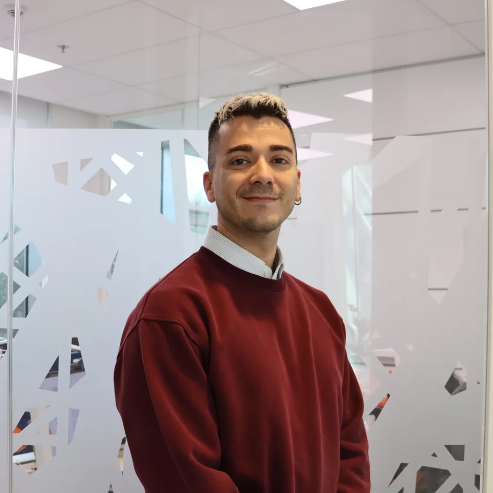

Data Analytics and Decision Sciences
Politecnico di Milano e Human Technopole
Nel gruppo di Andrea Ganna lavoro sui foundation model per i dati amministrativi sanitari.
Il gruppo di ricercaDottorando in Health Data Science
Al Politecnico di Milano e a Human Technopole studio come applicare i foundation model ai dati amministrativi sanitari.
Il mio percorso
Politecnico di Milano e Human Technopole
Nel gruppo di Andrea Ganna lavoro sui foundation model per i dati amministrativi sanitari.
Il gruppo di ricercaLaurea magistrale con un focus su imaging medico, machine learning ed elaborazione del linguaggio naturale. Nella tesi ho studiato l’apprendimento non supervisionato di rappresentazioni delle immagini cerebrali nella malattia di Parkinson.
Voto finale: 109/110
Laurea magistrale dedicata a politiche pubbliche, sanità pubblica e istituzioni internazionali, in un percorso di doppio titolo con la University at Albany.
Voto finale: 110/110 e lode
Master in Public Administration con indirizzo in politiche sanitarie. Ho approfondito il finanziamento dei sistemi sanitari e l’analisi finanziaria.
GPA: 3.95/4.00
Studi universitari in management e marketing, con una formazione in microeconomia, macroeconomia e statistica.
Voto finale: 106/110
IEEE Nuclear Science Symposium and Medical Imaging Conference, Yokohama, Giappone
Da ottobre 2025 a maggio 2026
Ho diretto la business unit dentale, con circa 110 persone e 6 milioni di euro di ricavi annui. Ho coordinato quattro soluzioni di AI, tra cui un assistente per oltre 200 colleghi e un sistema di analisi dei commenti dei pazienti di oltre 40 centri.
Da maggio 2017 a ottobre 2025
Ho seguito lo sviluppo di servizi di riabilitazione, odontoiatria e nutrizione, fino alla direzione di un portafoglio con ricavi annui fino a 12 milioni di euro. Come Chief of Healthcare Management ho curato la selezione e la formazione di oltre 200 professionisti sanitari.
Ho selezionato e formato studenti per il programma Microsoft Student Partner e seguito le startup che partecipavano al programma BizSpark.
Nell’ufficio della deputata Amy Paulin ho svolto analisi economiche e politiche a supporto delle proposte di legge delle commissioni agricoltura e sanità.